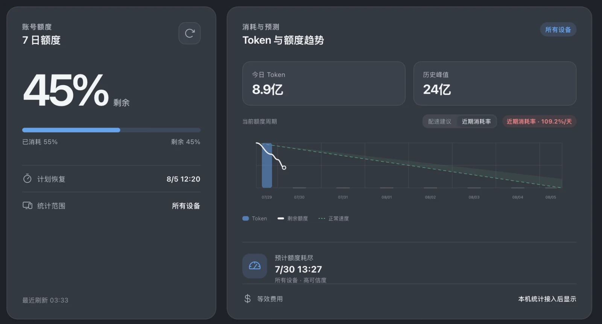

额度与重置时间
直接读取当前登录 Codex 账号的周额度，包括同一账号在其他设备上的活动。
41%
剩余
原生 Codex 用量仪表盘
在 macOS 和 Windows 上查看账号额度、Token 用量、耗尽预测与本机会话价值。

QuotaDial 同时提供账号数据与本机明细，并明确区分两种统计范围。
直接读取当前登录 Codex 账号的周额度，包括同一账号在其他设备上的活动。
将子代理用量归并到所属会话，并按项目与模型比较本月使用情况。
根据近期额度变化生成实用预测，在周额度归零前及时调整使用速度。
Codex 提供账号数据时使用账号范围，需要详细拆分时读取本机会话文件。
周额度、重置时间，以及账号返回的每日 Token 用量。
项目、会话、模型、本月 Token 和等效 API 价值。
提示词、回复正文、推理内容与工具输出不会复制到 QuotaDial 数据库。
v0.1.1 支持 Apple Silicon macOS 和 Windows 10/11 x64。
当前安装包尚未进行代码签名，操作系统可能要求你确认首次启动。